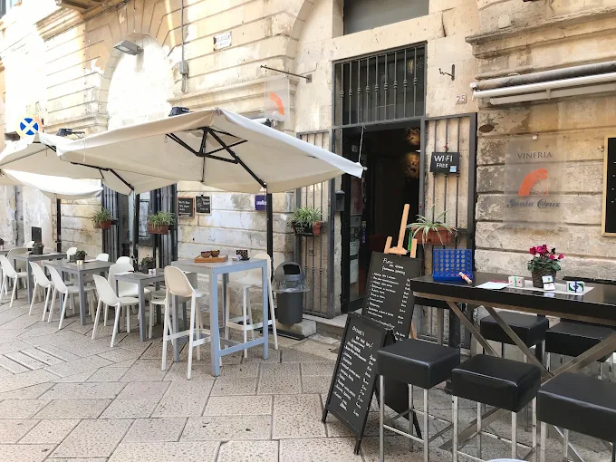
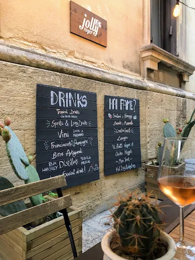
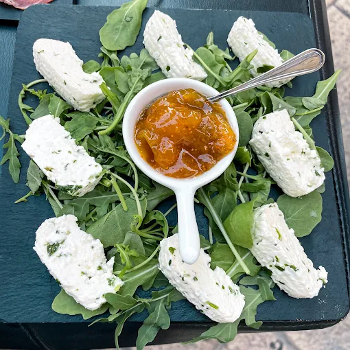
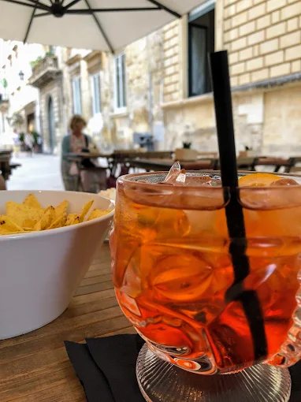

I
Calici al banco
Negroamaro, primitivo, susumaniello e i bianchi di Salento serviti al bicchiere. Si assaggia prima di scegliere: si dice cosa piace, il resto lo facciamo noi.
- Calice della casa4
- Calice da carta6 — 9
- Degustazione, tre calici15
Vineria e cocktail bar
davanti al rosone della Basilica
Il luogo
Via Umberto I è la strada che porta alla facciata più intagliata del barocco leccese. Noi stiamo al numero 25, con i tavoli fuori e la pietra davanti.
Si entra alle nove per un caffè in ghiaccio e si resta fino a tardi. Nel mezzo: bottiglie del Salento aperte al banco, taglieri che cambiano con quello che arriva, cocktail fatti con calma. Nessuna prenotazione obbligatoria, nessun codice: si passa, si vede se c'è posto, ci si siede.
Chi si ferma tardi trova i giochi da tavolo sotto il bancone.
La carta
I
Negroamaro, primitivo, susumaniello e i bianchi di Salento serviti al bicchiere. Si assaggia prima di scegliere: si dice cosa piace, il resto lo facciamo noi.
II
Metodo classico pugliese, franciacorta, qualche champagne per le sere che lo chiedono. Ghiaccio sempre pronto: d'estate qui si beve fresco.
III
Formaggi e salumi del Salento, burratina, verdure sott'olio, pane e frise. Il tagliere piccolo basta per due che hanno già cenato; il grande no.
IV
Gli intramontabili fatti bene e quattro nostri, costruiti su erbe e agrumi del posto. Chiedete quello con il bergamotto e il rosmarino bruciato.
V
Espresso, ghiaccio, latte di mandorla. Dalle nove del mattino, al banco, in tre sorsi. È il motivo per cui molti entrano qui la prima volta.
I prezzi sono indicativi — la carta cambia con la stagione
Le ore
09:00 — 12:00
Caffè in ghiaccio al banco, giornale, i primi che tornano dalla basilica. La strada è ancora quieta.
18:00 — 21:00
Il momento pieno. Calici aperti, taglieri che escono, tutti i tavoli fuori occupati. Meglio arrivare presto.
21:00 — 01:00
Luci basse, cocktail, la facciata illuminata a pochi passi. Il sabato si tira fino alle due.
Il dehors



